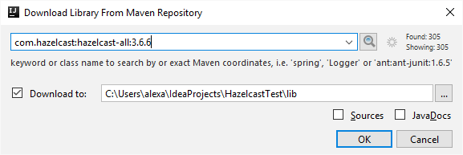
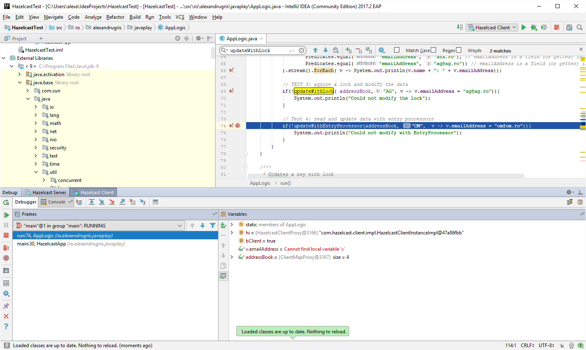
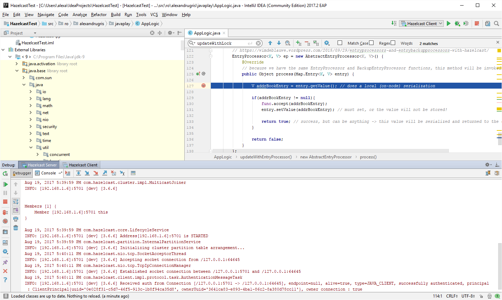

Hazelcast Intro
A short introduction to Hazelcast: what it is, what scenarios is can be used for, how to run a test environment.
What is Hazelcast
Hazelcast is:
- A distributed memory cache
- A clustering solution
- A no sql key/value datastore
- An in memory messaging system
Hazelcast is an in-memory data grid, which allows to scale our applications dynamically, by simply adding new nodes to the cluster. On top of that, it has the ability to run embedded in our Java applications. There are two editions: the open source and the enterprise. The enterprise adds new security features, WAN replication (between clusters, possibily located in different datacentres) and Tomcat session clustering.
First application
Create a simple java console application, with Hazelcast library added to it:

The server and the client share a very similar code, making applications symmetrical to write:
package ro.alexandrugris.javaplay;
import com.hazelcast.core.Hazelcast;
import com.hazelcast.core.HazelcastInstance;
import java.io.IOException;
public class HazelcastServerApp {
public static HazelcastInstance createStorageNode(){
return Hazelcast.newHazelcastInstance();
};
public static void waitForKey(){
try{ System.in.read(); }
catch(IOException exx){}
}
public static void main(String[] args) {
HazelcastInstance hi = null;
try{
hi = createStorageNode();
waitForKey();
} finally {
if(hi != null) hi.shutdown();
}
}
}
For the client, the only difference is the createStorageNode() method, which still returns a HazelcastInstance, but has a different content:
public static HazelcastInstance createStorageNode(){
return HazelcastClient.newHazelcastClient();
};
If we spanwn several instances of the server we notice that each of them joins the cluster automatically:
Members [3] {
Member [192.168.1.6]:5701
Member [192.168.1.6]:5702
Member [192.168.1.6]:5703 this
}
If we kill one instance, the cluster will try a little bit to reconnect to it and then simply rebalance across the remaining nodes:
Members [2] {
Member [192.168.1.6]:5701
Member [192.168.1.6]:5702 this
}
The client will also automatically connect to the cluster but will not register itself as a member.
The Distributed Map
Data in Hazelcast is split in partititions and each partition is assigned to a node. By default, there are 271 partitions. Thus, there are more partitions on each node. Each node stores primary data and backup data.
The IMap interface inherits directly from java.util.Map. However, it is optimized for batch updates and thus, for performance reasons, it is preferred to put elements in a local HashMap and then use the IMap::putAll method to push all updates in a single operation. Therefore, while we can blindly use Hazelcast instead of a map anywhere in our application, the abstration leaks and it is better to be aware of the performance consequences. Each individual call is a Hazelcast transaction and requires a remote request / response. The putAll is also an atomic operation, but it includes all the elements of the map in a single transaction.
The following are synonims within the Hazelcast world: 1 Hazelcast instance == 1 storage node == 1 cluster member. If the Hazelcast servers are shutdown properly, they will rebalance the cluster to the extent of available memory. However, if they are killed, data is lost if all replicas are affected.
Types stored in the distributed map must implement Serializable
// must implement the Serializable inferface
public class AddressBookEntry implements Serializable{
// https://stackoverflow.com/questions/285793/what-is-a-serialversionuid-and-why-should-i-use-it
private static final long serialVersionUID = 8162873687563536545L;
public final static String MAP_NAME = "AddressBook_Map";
// fields
public String name = null;
public String emailAddress = null;
public String streetAddress = null;
public AddressBookEntry(String name, String emailAddress, String streetAddress){
this.name = name;
this.emailAddress = emailAddress;
this.streetAddress = streetAddress;
}
}
Adding items to Hazelcast and basic querying
In the snippet below I add a batch of data to Hazelcast and then perform two basic queries:
- Get the keys of the elements
- Get a list of elements based on a criteria different from the primary key
We can add additional indexing on the fields that do not make up primary keys so that queries will run faster. For each put though, additional overhead will incur. Indexing on non-keys is not mandatory for queries, but can speed up processing for frequent operations.
// IMap implements the java.util.Map inferface
static IMap<String, AddressBookEntry> addressBook = null;
private static void addTestData(IMap<String, AddressBookEntry> addressBook){
Map<String, AddressBookEntry> map = Arrays.asList(
new AddressBookEntry("AG", "a@a.ro", "Otopeni"),
new AddressBookEntry("OM", "o@o.ro", "Otopeni"),
new AddressBookEntry("GL", "g@g.ro", "Otopeni"),
new AddressBookEntry("GA", "a@a.ro", "Otopeni")
).stream().collect(Collectors.toMap(AddressBookEntry::getKey, a -> a));
// adding a map in one shot is more efficient,
// as each 'put' call is treated as a separate transaction
addressBook.putAll(map);
}
public static void run(HazelcastInstance hi, boolean bClient){
assert(hi != null);
// get the map and make operations on it
addressBook = hi.getMap(AddressBookEntry.MAP_NAME);
/*
// because later we will do a query based on the email address,
// let's add an index to it (this step is not mandatory)
// "true" below means it allows range queries by
// using a tree instead of a hashmap for the index
addressBook.addIndex("emailAddress", true);
*/
if(addressBook.size() == 0){
addTestData(addressBook);
}
// TEST 1: output the keys
addressBook.keySet().stream().forEach( k -> System.out.println(k));
// TEST 2: use predicates to query the data on something else beside the primary key
// emailAddress is a field in our class
addressBook.values(Predicates.or(
// emailAddress is a field (or getter) in AddressBookEntry
Predicates.equal("emailAddress", "a@a.ro"),
Predicates.equal("emailAddress", "o@o.ro"))
).stream().forEach( v -> System.out.println(v.name + ": " + v.emailAddress));
}
Adding persistant storage capabilities
// persistence to a database
public static final MapConfig getMapConfig(){
return new MapConfig()
.setMapStoreConfig(
new MapStoreConfig()
// set the class which will implement the MapStore<K, V> interface
.setImplementation(AddressBookMapStore.mapStore)
// write with a delay of 5 seconds, so the entries are batched
.setWriteDelaySeconds(3)
)
// which map this configuration is for (name of the map)
.setName(MAP_NAME);
}
The function above is called through the following snippet, ran only on the storage nodes:
if(!bClient) // configure the map to use persistence if on the server
hazelcastInstance.getConfig().addMapConfig(AddressBookEntry.getMapConfig());
The AddressBookMapStore is a straight forward implementation of the MapStore<K, V> interface:
// implementation of persistence
public static class AddressBookMapStore implements MapStore<String, AddressBookEntry> {
public static AddressBookMapStore mapStore = new AddressBookMapStore();
private AddressBookMapStore(){}
@Override
public void store(String s, AddressBookEntry addressBookEntry) {
// TODO: persist here
}
@Override
public void storeAll(Map<String, AddressBookEntry> map) {
// TODO: persist here
}
@Override
public void delete(String s) {
// TODO: persist here
}
@Override
public void deleteAll(Collection<String> collection) {
// TODO: persist here
}
@Override
public AddressBookEntry load(String s) {
// TODO: persist here
return null;
}
@Override
public Map<String, AddressBookEntry> loadAll(Collection<String> collection) {
// TODO: persist here
return null;
}
@Override
public Iterable<String> loadAllKeys() {
// TODO: persist here
return null;
}
}
Indexing
If we want to add indexing on a different field except the primary key, a better way than described above in the basic querying section is to modify the MapConfig as follows:
public static final MapConfig getMapConfig(){
return new MapConfig()
/* // Persistence to an external service (database)
.setMapStoreConfig(
new MapStoreConfig()
.setImplementation(AddressBookMapStore.mapStore)
.setWriteDelaySeconds(3)
)
*/
// Indexing:
.addMapIndexConfig(new MapIndexConfig()
.setOrdered(true)
.setAttribute("emailAddress"))
.setName(MAP_NAME);
}
Link to docs here.
Concurrency with locks
Works, but it is not the fastest:
- Creates synchronization points
- Forces two serialization operations over the network: map.get(key) and map.put(key), even when we aim to update only a small part of the data.
- A better way is to use entry processors (next chapter)
public static<K, V> boolean updateWithLock(IMap<K, V> map, K k, Function<V, V> func){
try{
if(!map.tryLock(k, 2, TimeUnit.SECONDS)) {
return false;
}
map.put(k, func.apply(map.get(k)));
return true;
}
catch(InterruptedException ex){
System.out.println(ex.toString());
throw new RuntimeException(ex);
}
finally {
map.unlock(k);
}
}
Entry processors
Data is updated directly in the storage node. Especially for small updates, it reduces the amount of serialized data that is transmitted across the network. Entry processors are thread safe because are executed in Hazelcast in a serial manner per key, thus avoiding synchronization in client code. Hazelcast achieves this by keeping a list of entry processors per key on the storage node and executing them one after the other.
A great link to an article explaining the EntryProcessor and BackupEntryProcessor
AbstractEntryProcessor updates both the master key and the backup key. If we just want to read a key with no locking or update only on the master copy,
we can implement EntryProcessor directly (no need to read the backup) or simply pass false to the constructror of AbstractEntryProcessor.
The method EntryProcessor::process returns an Object to the caller. This can be the anything, thus EntryProcessors can be used to read data without need to modify it.
The method Map.Entry::setValue must be called for the updated value to be persisted in Hazelcast.
Below is the code:
interface SerializedConsumer<T> extends Consumer<T>, Serializable{ }
public static<K, V> boolean updateWithEntryProcessor(IMap<K, V> map, K k, SerializedConsumer<V> func){
EntryProcessor<K, V> ep = new AbstractEntryProcessor<K, V>(true) { // true: applyOnBackup
@Override
// because we have the same EntryProcessor and BackupEntryProcessor functions,
// this method will be invoked on each replica
public Object process(Map.Entry<K, V> entry) {
V addrBookEntry = entry.getValue(); // does a local (on-node) serialization
if(addrBookEntry != null){
func.accept(addrBookEntry);
entry.setValue(addrBookEntry); // must set, or the value will not be stored!
// success, but can be anything ->
//this value will be serialized and returned to the client
return true;
}
return false;
}
};
return (boolean)map.executeOnKey(k, ep); // can be used with several keys
}
Invoked as:
if(!updateWithEntryProcessor(addressBook, "OM", v -> v.emailAddress = "om@om.ro")){
System.out.println("Could not modify with EntryProcessor");
}
As said before, the invocation happens on the client, while the breakpoint set in EntryProcessor::process is hit on the storage node:
Client Node

Storage Node

I am using here the IMap::executeOnKey method to run the EntryProcessor on a specific key. However, there are other useful methods to run EP's:
- IMap::executeOnEntries which has an optional Predicate parameter to select the desired keys
- IMap::executeOnKeys to run the predicate against a specific set of keys
An important point on accessing data from other structures in Hazelcast: https://stackoverflow.com/questions/30898557/accessing-imap-from-entryprocessor
Aggregators
Aggregators are applied over the whole map and are run on the storage node. There are two functions needed for aggregation:
- Getting the aggregated-by value from the Map.Entry -> must extend the Supplier<Key, Value, Result> class
- Summarizing by that value and returning a single result -> must extend the Aggregation<Key, SupplierResult, AggregationResult> class
Here is an example usage:
public interface SupplierFunc<K, V, R> extends Serializable{
R apply(K k, V v);
}
public static <K, V, R> R processAllEntriesWithAggregators(IMap<K, V> map,
SupplierFunc<K, V, R> func,
Aggregation<K, R, R> aggregation){
return map.aggregate(new Supplier<K, V, R>() {
@Override
public R apply(Map.Entry<K, V> entry) {
return func.apply(entry.getKey(), entry.getValue());
}
}, aggregation);
}
being called as:
// a basic aggregator which counts all letters from the email address (dummy, just for tests)
long countOfAllLettersInEmailAddresses =
processAllEntriesWithAggregators(
addressBook,
(k, v)-> (v.emailAddress == null)? null : (long)v.emailAddress.length(),
Aggregations.longSum());
System.out.println("All email addresses added letters amount to: " + countOfAllLettersInEmailAddresses);
We used here:
- A supplier in the form of a lambda expression - must implement a Serializable functional interface
- A provided aggregator: Aggregations.longSum()
If in the supplier we want to exclude an item (like is the case above for where emailAddress == null), we simply return null from the Supplier::apply function.
Data Affinity
Hazelcast always puts two identical keys in the same partition. To make sure an operation (join) occurs on the same partition, one needs to implement, beside Serializable, the PartitionAware<> interface with the method getPartitionKey, on the mapped data.
This is not enough, however. We also need to create an EntryProcessor and, additionally, implement the HazelcastInstanceAware interface. This interface will set the Hazelcast instance when the entry processor is run so that we can query the instance for other local maps.
public class JoinLikeEntryProcessor implements
Serializable,
EntryProcessor<Long, Customer>,
HazelcastInstanceAware {
private transient HazelcastInstace hi = null; // not serialized
@Override
public Object process(Map.Entry<> processedEntry) {
// [...]
IMap<> map = hi.getMap("<map of related data>");
// get only the related keys stored locally on the node
Set<> keys = map.localKeyset(new SqlPredicate("join_key =" + processedEntry.key));
// [...]
}
@Override
public void setHazelcastInstance(HazelcastInstance _hi){
hi = _hi;
}
}
Notes On Other Data Structures
Set and List: data must fit on a single machine, with replicas on other machines. Therefore, one cannot store unlimited amount of data in a single set. Iterating through a set by using an iterator will bring all data to the local machine, no batching, thus must be used with care.
Queues: allow persistence.
Topics: publish / subscribe pattern, do not allow persistence.
MultiMap: similar to map, but stores a collection inside the value. By default, the values are backed by sets and do not allow identical elements to be stored. Can be changed through config to other data structure. MultiMaps do not support persistence.
Locks: Hazelcast implementation of distributed synchronization primitives.
Events and Listeners
EntryListeners:
Work on maps and multimaps by permiting notifications for when an element has been added or removed from the map. Example usage: a new customer is added to our map. In our entry listener we acknowledge the change and then publish his email to queue of emails to be sent out to new cusomters. This pattern is very useful for distributed applications where you want to separate logic of adding a customer, for instance, to various potential actions that should be triggered by such an event. They permit access to the oldValue of the key.
If we start several clients which register the entry listener, all will be invoked for all data that is added to that map. If we want to listen only to the local data, we have LocalEntryListeners.
Continuous queries:
Setup just like EntryListeners, but with a filtering predicate.
ItemListeners:
Used for queues, lists and sets.
Partition lost listeners:
Used for alerting for when a data partition is lost.